4.8 Practice problems
Tutorial Sheets 3, 4 and 5 in full. Work each question before opening the solution.
Problem 4.1. [Tutorial Sheet 3] Sketch the graph of each of the following. (i) \(2y-5x=10\), (ii) \(y+x=-\frac {1}{2}\), (iii) \(y=x\), (iv) \(y=-7\), (v) \(x=3\).
Show solution
Solution. For a straight line, two points are enough, and the two easiest are the intercepts — set \(x=0\) for one and \(y=0\) for the other.
(i). Rearranging into the form \(y=mx+c\): \[2y=5x+10\quad \implies \quad y=\frac {5}{2}x+5.\] Gradient \(\frac {5}{2}\), \(y\)-intercept \(5\). Setting \(y=0\) gives \(x=-2\).
(ii). \(y=-x-\frac {1}{2}\). Gradient \(-1\), \(y\)-intercept \(-\frac {1}{2}\), and \(y=0\) at \(x=-\frac {1}{2}\).
(iii). \(y=x\): gradient \(1\) through the origin, the line at \(45^\circ \).
(iv). \(y=-7\): there is no \(x\) in the equation, so \(y\) is \(-7\) whatever \(x\) is. A horizontal line, gradient \(0\).
(v). \(x=3\): no \(y\) in the equation, so \(x\) is \(3\) whatever \(y\) is. A vertical line. Its gradient is undefined, not zero.
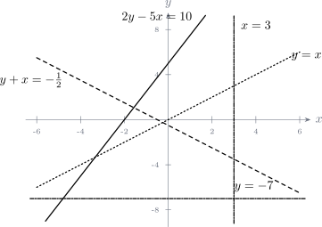
Note 4.35. Parts (iv) and (v) are the ones that get swapped. The rule is that the line is perpendicular to the axis of the variable that appears. In \(y=-7\) only \(y\) appears, so the line is perpendicular to the \(y\)-axis, that is horizontal.
Problem 4.2. [Tutorial Sheet 3] Determine the nature of the roots of each equation. (i) \(2x^2-2x-5=0\), (ii) \(6x^2+4x+2=0\), (iii) \(x^2-10x+25=0\), (iv) \(x^2+3x=0\), (v) \(x^2-25=0\), (vi) \(x^2=0\).
Show solution
Solution. Everything is decided by the discriminant of \(ax^2+bx+c=0\): \[\Delta =b^2-4ac.\] \[\Delta >0\ \implies \ \text {two distinct real roots},\qquad \Delta =0\ \implies \ \text {one repeated real root},\] \[\Delta <0\ \implies \ \text {no real roots (two complex roots)}.\] When \(\Delta >0\) there is a further distinction: if \(\Delta \) is a perfect square the roots are rational, otherwise irrational.
| \(a\) | \(b\) | \(c\) | \(\Delta =b^2-4ac\) | Nature of the roots | |
| (i) | 2 | \(-2\) | \(-5\) | \(4+40=44\) | two distinct real, irrational |
| (ii) | 6 | 4 | 2 | \(16-48=-32\) | no real roots; two complex |
| (iii) | 1 | \(-10\) | 25 | \(100-100=0\) | one repeated real root |
| (iv) | 1 | 3 | 0 | \(9-0=9\) | two distinct real, rational |
| (v) | 1 | 0 | \(-25\) | \(0+100=100\) | two distinct real, rational |
| (vi) | 1 | 0 | 0 | \(0-0=0\) | one repeated real root |
The roots themselves, for confirmation: \[\text {(i) } x=\frac {1\pm \sqrt {11}}{2},\qquad \text {(iii) } x=5 \text { twice},\qquad \text {(iv) } x(x+3)=0\ \implies \ x=0,-3,\] \[\text {(v) } x=\pm 5,\qquad \text {(vi) } x=0 \text { twice}.\]
Note 4.36. In (iv) and (vi) a coefficient is zero, and it must still be substituted as zero rather than ignored. Writing \(\Delta =b^2-4ac\) with \(c\) simply left out of (iv) gives \(9-4=5\) instead of \(9\), and although the conclusion happens to survive, the working does not.
Note 4.37. \(\Delta =0\) is often read as “only one root”. More precisely there are two roots that have coincided: (iii) factorises as \((x-5)^2=0\) and (vi) as \(x^2=0\). The graph touches the \(x\)-axis at that point rather than crossing it, which is what a repeated root looks like.
Problem 4.3. [Tutorial Sheet 3] Find the value(s) of \(k\) for which the quadratic equation has equal roots. (i) \(x^2+2kx+25=0\), (ii) \(kx^2+12x+k=0\).
Show solution
Solution. Equal roots means \(\Delta =0\).
(i). Here \(a=1\), \(b=2k\), \(c=25\): \[\Delta =(2k)^2-4(1)(25)=4k^2-100=0\] \[4k^2=100\quad \implies \quad k^2=25\quad \implies \quad k=\pm 5.\]
Checking: \(k=5\) gives \(x^2+10x+25=(x+5)^2\), and \(k=-5\) gives \(x^2-10x+25=(x-5)^2\). Both are perfect squares. \(\checkmark \)
(ii). Here \(a=k\), \(b=12\), \(c=k\): \[\Delta =12^2-4(k)(k)=144-4k^2=0\] \[4k^2=144\quad \implies \quad k^2=36\quad \implies \quad k=\pm 6.\]
Note 4.38. In (ii) the value \(k=0\) has to be excluded separately, and not because of the discriminant. If \(k=0\) the equation collapses to \(12x=0\), which is linear and has one root rather than two equal ones — it is not a quadratic at all. Here \(k=0\) is not among the answers anyway, but whenever the leading coefficient contains the unknown it is worth a moment’s thought.
Note 4.39. Both answers come in \(\pm \) pairs because \(k\) appears squared in the discriminant. Giving only the positive value is a common way to lose half the marks.
Problem 4.4. [Tutorial Sheet 3] By completing the square, rewrite each function in the form \(f(x)=a(x-h)^2+k\). Hence sketch the graph, showing the \(x\)- and \(y\)-intercepts and the turning point, and state the range. (i) \(f(x)=-2x^2+4x-5\), (ii) \(f(x)=4-3x^2\), (iii) \(f(x)=3x^2+6x-4\), (iv) \(f(x)=4x^2-12x+3\), (v) \(f(x)=x^2+10x+25\), (vi) \(f(x)=x^2-12x+36\).
Show solution
Solution. In the form \(a(x-h)^2+k\), the turning point is \((h,k)\), and the parabola opens upwards if \(a>0\) and downwards if \(a<0\). The \(y\)-intercept is \(f(0)\); the \(x\)-intercepts are found by solving \(f(x)=0\), and there may be none.
(i). Take the \(-2\) out of the first two terms only: \[-2x^2+4x-5=-2\left (x^2-2x\right )-5=-2\left [(x-1)^2-1\right ]-5\] \[=-2(x-1)^2+2-5=-2(x-1)^2-3.\] Turning point \((1,-3)\), a maximum since \(a=-2<0\). \(y\)-intercept \(f(0)=-5\). For the \(x\)-intercepts, \(-2(x-1)^2=3\) has no solution, since the left side is never positive: no \(x\)-intercepts. \[\text {range}=(-\infty ,-3].\]
(ii). Already almost in the required form: \[4-3x^2=-3(x-0)^2+4.\] Turning point \((0,4)\), a maximum. \(y\)-intercept \(4\). Setting \(f(x)=0\): \[3x^2=4\quad \implies \quad x=\pm \frac {2}{\sqrt {3}}=\pm \frac {2\sqrt {3}}{3}\approx \pm 1.15.\] \[\text {range}=(-\infty ,4].\]
(iii). \[3x^2+6x-4=3\left (x^2+2x\right )-4=3\left [(x+1)^2-1\right ]-4=3(x+1)^2-7.\] Turning point \((-1,-7)\), a minimum. \(y\)-intercept \(-4\). For the \(x\)-intercepts: \[3(x+1)^2=7\quad \implies \quad (x+1)^2=\frac {7}{3}\quad \implies \quad x=-1\pm \frac {\sqrt {21}}{3}\approx -2.53 \text { and } 0.53.\] \[\text {range}=[-7,\infty ).\]
(iv). \[4x^2-12x+3=4\left (x^2-3x\right )+3=4\left [\left (x-\tfrac {3}{2}\right )^2 -\tfrac {9}{4}\right ]+3=4\left (x-\tfrac {3}{2}\right )^2-9+3 =4\left (x-\tfrac {3}{2}\right )^2-6.\] Turning point \(\left (\frac {3}{2},-6\right )\), a minimum. \(y\)-intercept \(3\). Roots: \[\left (x-\tfrac {3}{2}\right )^2=\tfrac {3}{2}\quad \implies \quad x=\frac {3}{2}\pm \frac {\sqrt {6}}{2}\approx 0.27 \text { and } 2.72.\] \[\text {range}=[-6,\infty ).\]
(v). This one is already a perfect square: \[x^2+10x+25=(x+5)^2+0.\] Turning point \((-5,0)\), a minimum sitting on the \(x\)-axis. \(y\)-intercept \(25\). There is one \(x\)-intercept, \(x=-5\), a repeated root where the curve touches the axis. \[\text {range}=[0,\infty ).\]
(vi). Likewise: \[x^2-12x+36=(x-6)^2+0.\] Turning point \((6,0)\), \(y\)-intercept \(36\), one \(x\)-intercept at \(x=6\) where the curve touches. \[\text {range}=[0,\infty ).\]
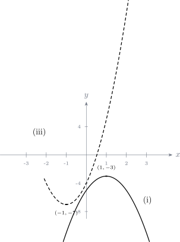
Note 4.40. The single commonest error is losing the factor \(a\) when it comes back out of the bracket. In (iii) the \(-1\) inside the bracket becomes \(3\times (-1)=-3\) on the way out, giving \(-4-3=-7\) and not \(-4-1=-5\). Multiplying out the finished form to check it agrees with the original takes ten seconds and catches this every time.
Note 4.41. Parts (v) and (vi) have \(k=0\), which is exactly the case \(\Delta =0\) from the previous question — one repeated root, the curve touching the axis rather than crossing. The two questions are describing the same thing from different directions.
Problem 4.5. [Tutorial Sheet 3] Sketch on the same axes, showing the \(x\)- and \(y\)-intercepts, the points of intersection and the turning point: (i) \(y=x^2-4x\) and \(x+y=0\), (ii) \(y=3x^2-2x\) and \(y=1-4x\), (iii) \(y=x^2\) and \(y=-x^2+6x\).
Show solution
Solution. To find where two curves meet, set their \(y\)-values equal and solve.
(i). The line is \(y=-x\). Setting the two equal: \[x^2-4x=-x\quad \implies \quad x^2-3x=0\quad \implies \quad x(x-3)=0,\] so \(x=0\) or \(x=3\), giving the points \((0,0)\) and \((3,-3)\).
The parabola \(y=x^2-4x=x(x-4)\) cuts the axis at \(0\) and \(4\), with turning point at \(x=2\), \(y=-4\).
(ii). Setting the two equal: \[3x^2-2x=1-4x\quad \implies \quad 3x^2+2x-1=0\quad \implies \quad (3x-1)(x+1)=0,\] so \(x=\frac {1}{3}\) or \(x=-1\), giving the points \(\left (\frac {1}{3},-\frac {1}{3}\right )\) and \((-1,5)\).
The parabola \(y=x(3x-2)\) cuts the axis at \(0\) and \(\frac {2}{3}\), with turning point at \(x=\frac {1}{3}\), \(y=-\frac {1}{3}\).
(iii). Setting the two equal: \[x^2=-x^2+6x\quad \implies \quad 2x^2-6x=0\quad \implies \quad 2x(x-3)=0,\] so \(x=0\) or \(x=3\), giving \((0,0)\) and \((3,9)\).
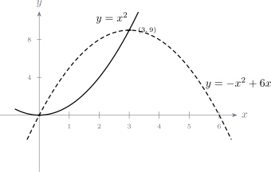
Note 4.42. Always simplify to “\(=0\)” before solving, as in every part above. Trying to cancel an \(x\) from \(x^2-4x=-x\) to get \(x-4=-1\) loses the root \(x=0\) entirely — dividing by \(x\) is only legitimate when \(x\neq 0\), and here it is one of the answers.
Problem 4.6. [Tutorial Sheet 3] The number of Vibrio cholerae in refrigerated water is \[N(T)=20T^2-20T+120,\qquad -2\leq T\leq 14,\] where \(T\) is the temperature in degrees Celsius.
- Find the number of bacteria at \(0^\circ \).
- Find the number of bacteria at \(10^\circ \).
- At what temperature is the number of bacteria smallest?
Show solution
Solution. (a). Substitute \(T=0\): \[N(0)=20(0)-20(0)+120=120\ \text {bacteria}.\]
(b). Substitute \(T=10\): \[N(10)=20(100)-20(10)+120=2000-200+120=1920\ \text {bacteria}.\]
(c). The coefficient of \(T^2\) is positive, so the parabola opens upwards and its turning point is a minimum. Completing the square: \[20T^2-20T+120=20\left (T^2-T\right )+120 =20\left [\left (T-\tfrac {1}{2}\right )^2-\tfrac {1}{4}\right ]+120\] \[=20\left (T-\tfrac {1}{2}\right )^2-5+120=20\left (T-\tfrac {1}{2}\right )^2+115.\] The square is smallest when it is zero, at \(T=\frac {1}{2}\).
\[\therefore \quad \text {the number is smallest at } T=0.5^\circ \text {C}, \text { where } N=115 \text { bacteria}.\]
Note 4.43. The answer \(T=\frac {1}{2}\) lies inside the stated range \(-2\leq T\leq 14\), so it is genuinely the minimum. Had the turning point fallen outside the range, the smallest value would have occurred at whichever endpoint was nearer, and the vertex would have been the wrong answer. Always check the turning point against the domain the question gives.
Problem 4.7. [Tutorial Sheet 3] The daily profit in dollars of a small company is \[f(x)=-16x^2+64x+190,\] where \(x\) is the number of products sold each day. Find the number sold that maximises the profit, and the maximum profit.
Show solution
Solution. The coefficient of \(x^2\) is negative, so the parabola opens downwards and its turning point is a maximum. Completing the square: \[-16x^2+64x+190=-16\left (x^2-4x\right )+190 =-16\left [(x-2)^2-4\right ]+190\] \[=-16(x-2)^2+64+190=-16(x-2)^2+254.\]
The largest value occurs when the square is zero, at \(x=2\): \[\therefore \quad \text {selling } 2 \text { products a day gives a maximum profit of \$}254.\]
Note 4.44. The \(y\)-intercept is \(f(0)=190\), the profit from selling nothing. That is not nonsense here — it just means the model is a rough one, since a real business selling nothing would not make $190. Reading off what a model says at the edges of its range is a good habit, and a good way to notice its limits.
Problem 4.8. [Tutorial Sheet 3] The length of a rectangular fence is three more than twice the width. Determine the dimensions that give a total area of \(27\text { m}^2\).
Show solution
Solution. Step 1 — name the unknown. Let the width be \(w\) metres. Then the length is \[\ell =2w+3.\]
Step 2 — form the equation. \[\text {area}=w\ell =w(2w+3)=27.\]
Step 3 — rearrange and solve. \[2w^2+3w-27=0.\] Factorising — looking for two numbers multiplying to \(2\times (-27)=-54\) and adding to \(3\), namely \(9\) and \(-6\): \[2w^2+9w-6w-27=0\] \[w(2w+9)-3(2w+9)=0\] \[(w-3)(2w+9)=0,\] \[\implies \quad w=3\quad \text {or}\quad w=-\frac {9}{2}.\]
Step 4 — reject the impossible root. A width cannot be negative, so \(w=-\frac {9}{2}\) is discarded and \(w=3\).
\[\ell =2(3)+3=9.\]
\[\therefore \quad \text {the fence is } 3\text { m by } 9\text { m}.\]
Check. \(3\times 9=27\) m\(^2\). \(\checkmark \)
Note 4.45. Step 4 is part of the answer, not an afterthought. A quadratic from a word problem almost always produces one root that the situation forbids, and saying explicitly why it is rejected is what turns algebra into a solution.
Problem 4.9. [Tutorial Sheet 3] Use long division to divide each polynomial by the given divisor, and write it in the form \(f(x)=Q(x)D(x)+R(x)\).
- \(f(x)=x^2+3x+5\) by \(x+1\)
- \(f(x)=6x^3-19x^2+16x-4\) by \(x-2\)
- \(f(x)=x^3+6x^2-x+3\) by \(2x^2-1\)
- \(f(x)=x^4+3x^2+1\) by \(x^2+2x+3\)
Show solution
Solution. (i). Dividing \(x^2+3x+5\) by \(x+1\): \[x^2\div x=x;\quad x(x+1)=x^2+x;\quad \text {subtract: } 2x+5.\] \[2x\div x=2;\quad 2(x+1)=2x+2;\quad \text {subtract: } 3.\] \[\therefore \quad x^2+3x+5=(x+2)(x+1)+3.\]
(ii). Dividing \(6x^3-19x^2+16x-4\) by \(x-2\): \[6x^3\div x=6x^2;\quad 6x^2(x-2)=6x^3-12x^2;\quad \text {subtract: } -7x^2+16x-4.\] \[-7x^2\div x=-7x;\quad -7x(x-2)=-7x^2+14x;\quad \text {subtract: } 2x-4.\] \[2x\div x=2;\quad 2(x-2)=2x-4;\quad \text {subtract: } 0.\] \[\therefore \quad 6x^3-19x^2+16x-4=\left (6x^2-7x+2\right )(x-2)+0.\] The remainder is zero, so \(x-2\) is a factor.
(iii). Here the divisor \(2x^2-1\) has degree \(2\), so the quotient has degree \(3-2=1\) and the remainder degree at most \(1\). Note that \(2x^2-1\) has no \(x\) term, which must be treated as \(0x\): \[x^3\div 2x^2=\tfrac {1}{2}x;\quad \tfrac {1}{2}x\left (2x^2-1\right )=x^3-\tfrac {1}{2}x; \quad \text {subtract: } 6x^2-\tfrac {1}{2}x+3.\] \[6x^2\div 2x^2=3;\quad 3\left (2x^2-1\right )=6x^2-3;\quad \text {subtract: } -\tfrac {1}{2}x+6.\] \[\therefore \quad x^3+6x^2-x+3=\left (\tfrac {1}{2}x+3\right )\left (2x^2-1\right ) +\left (6-\tfrac {1}{2}x\right ).\]
(iv). The dividend has no \(x^3\) or \(x\) term, so write it as \(x^4+0x^3+3x^2+0x+1\): \[x^4\div x^2=x^2;\quad x^2\left (x^2+2x+3\right )=x^4+2x^3+3x^2;\quad \text {subtract: } -2x^3+0x^2+0x+1.\] \[-2x^3\div x^2=-2x;\quad -2x\left (x^2+2x+3\right )=-2x^3-4x^2-6x;\quad \text {subtract: } 4x^2+6x+1.\] \[4x^2\div x^2=4;\quad 4\left (x^2+2x+3\right )=4x^2+8x+12;\quad \text {subtract: } -2x-11.\] \[\therefore \quad x^4+3x^2+1=\left (x^2-2x+4\right )\left (x^2+2x+3\right )+(-2x-11).\]
Note 4.46. Missing powers must be written in as zeros, as in (iv). Skipping them causes terms to be subtracted from the wrong column, and the answer comes out wrong without anything looking obviously amiss.
Note 4.47. Part (iii) produces a fractional quotient, \(\frac {1}{2}x+3\). That is perfectly legitimate — the quotient need not have whole-number coefficients when the divisor’s leading coefficient is not \(1\). The check is always the same: multiply \(Q(x)D(x)\), add \(R(x)\), and confirm the original returns.
Problem 4.10. [Tutorial Sheet 3] Use synthetic division to divide each polynomial by the given divisor, writing it as \(p(x)=q(x)(x-a)+r\).
- \(p(x)=x^3-7x^2-4x+28\) by \(x+2\)
- \(p(x)=5x^3-6x^2-28x-2\) by \(x+2\)
- \(p(x)=x^3-10x^2-31x-30\) by \(x-3\)
- \(p(x)=6x^3+x^2-21x-10\) by \(2x+1\)
Show solution
Solution. Synthetic division works with the value of \(a\) for which the divisor vanishes: bring down the leading coefficient, multiply by \(a\), add to the next coefficient, and repeat. The last number is the remainder and the rest are the coefficients of \(q(x)\).
(i). Divisor \(x+2\), so \(a=-2\):
| \(a=-2\) | 1 | \(-7\) | \(-4\) | 28 |
| \(-2\) | 18 | \(-28\) | ||
| 1 | \(-9\) | 14 | 0 | |
\[\therefore \quad x^3-7x^2-4x+28=\left (x^2-9x+14\right )(x+2)+0.\] The remainder is zero, so \(x+2\) is a factor. Note also \(x^2-9x+14=(x-2)(x-7)\).
(ii). Divisor \(x+2\), so \(a=-2\):
| \(a=-2\) | 5 | \(-6\) | \(-28\) | \(-2\) |
| \(-10\) | 32 | \(-8\) | ||
| 5 | \(-16\) | 4 | \(\mathbf {-10}\) | |
\[\therefore \quad 5x^3-6x^2-28x-2=\left (5x^2-16x+4\right )(x+2)-10.\]
(iii). Divisor \(x-3\), so \(a=3\):
| \(a=3\) | 1 | \(-10\) | \(-31\) | \(-30\) |
| 3 | \(-21\) | \(-156\) | ||
| 1 | \(-7\) | \(-52\) | \(\mathbf {-186}\) | |
\[\therefore \quad x^3-10x^2-31x-30=\left (x^2-7x-52\right )(x-3)-186.\]
(iv). The divisor is \(2x+1\), not of the form \(x-a\). It vanishes at \(x=-\frac {1}{2}\), so divide by \(x+\frac {1}{2}\) first and adjust afterwards:
| \(a=-\frac {1}{2}\) | 6 | 1 | \(-21\) | \(-10\) |
| \(-3\) | 1 | 10 | ||
| 6 | \(-2\) | \(-20\) | 0 | |
\[6x^3+x^2-21x-10=\left (6x^2-2x-20\right )\left (x+\tfrac {1}{2}\right )+0.\] Since \(x+\frac {1}{2}=\frac {1}{2}(2x+1)\), move the factor of \(\frac {1}{2}\) into the quotient: \[=\left (3x^2-x-10\right )(2x+1)+0.\]
Note 4.48. Part (iv) is the one to be careful with. Synthetic division always divides by \(x-a\), so with a divisor of \(2x+1\) the quotient comes out twice as large as it should and must be halved. Forgetting the adjustment gives a quotient that fails the multiply-back check.
Note 4.49. The remainders here are \(0\), \(-10\), \(-186\) and \(0\), and each equals \(p(a)\): for instance in (ii), \(p(-2)=-40-24+56-2=-10\). That is the remainder theorem, and it gives a free check on every synthetic division.
Problem 4.11. [Tutorial Sheet 3] Factorise completely. (i) \(4x^3-8x^2-x+2\), (ii) \(2x^3+3x^2-3x-2\), (iii) \(x^3-2x^2+2x-4\), (iv) \(x^3-1\), (v) \(x^3+1\), (vi) \(x^4-6x^3-11x^2+24x-28\).
Show solution
Solution. (i). Four terms with a common pattern — group them: \[4x^3-8x^2-x+2=4x^2(x-2)-1(x-2)=\left (4x^2-1\right )(x-2).\] The first bracket is a difference of two squares: \[=(2x-1)(2x+1)(x-2).\]
(ii). Try small values to find a root. \(f(1)=2+3-3-2=0\), so \(x-1\) is a factor. Dividing: \[2x^3+3x^2-3x-2=(x-1)\left (2x^2+5x+2\right )=(x-1)(2x+1)(x+2).\]
(iii). Group again: \[x^3-2x^2+2x-4=x^2(x-2)+2(x-2)=\left (x^2+2\right )(x-2).\] The bracket \(x^2+2\) has no real roots, so this is as far as the factorisation goes over the real numbers.
(iv). A difference of two cubes, \(a^3-b^3=(a-b)\left (a^2+ab+b^2\right )\): \[x^3-1=(x-1)\left (x^2+x+1\right ).\] The quadratic has \(\Delta =1-4=-3<0\), so it does not factorise further over \(\mathbb {R}\).
(v). A sum of two cubes, \(a^3+b^3=(a+b)\left (a^2-ab+b^2\right )\): \[x^3+1=(x+1)\left (x^2-x+1\right ),\] and again \(\Delta =1-4=-3<0\).
(vi). As printed, this polynomial does not factorise. The rational root theorem says any rational root must divide \(28\), and testing every candidate \(\pm 1,\pm 2,\pm 4,\pm 7,\pm 14,\pm 28\) gives no zero — for instance \(f(1)=-20\), \(f(2)=-56\), \(f(7)=-56\), \(f(-2)=-56\).
Compare it with question 7(e) on the same sheet, which asks for the roots of \[x^4-6x^3=11x^2-24x-28,\qquad \text {that is}\qquad x^4-6x^3-11x^2+24x+28=0.\] That is the same polynomial with \(+28\) in place of \(-28\), and it factorises perfectly. So the sign here is a misprint. Working with \(+28\):
Testing candidates: \(f(-1)=1+6-11-24+28=0\), so \(x+1\) is a factor. Dividing, \[x^4-6x^3-11x^2+24x+28=(x+1)\left (x^3-7x^2-4x+28\right ),\] and the cubic is the very one from question 6(b)(i), already factorised there as \((x+2)\left (x^2-9x+14\right )=(x+2)(x-2)(x-7)\). Hence \[x^4-6x^3-11x^2+24x+28=(x+1)(x+2)(x-2)(x-7).\]
Note 4.50. Parts (i) and (iii) are done by grouping and (ii) by the factor theorem. Grouping is worth trying first on a four-term polynomial: it is quicker, and it either works immediately or plainly does not.
Note 4.51. “Factorise completely” means over the real numbers unless told otherwise, so \(x^2+2\), \(x^2+x+1\) and \(x^2-x+1\) are all left alone. Checking the discriminant is negative is what justifies stopping.
Problem 4.12. [Tutorial Sheet 3] Solve each equation. (a) \(x^3+x^2-x-1=0\), (b) \(2x^3+3x^2-3x=2\), (c) \(x^3+6x^2+5x-2=0\), (d) \(x^2(2x+1)=13x-6\), (e) \(x^4-6x^3=11x^2-24x-28\).
Show solution
Solution. (a). Group: \[x^3+x^2-x-1=x^2(x+1)-1(x+1)=\left (x^2-1\right )(x+1)=(x-1)(x+1)^2=0.\] \[\therefore \quad x=1\quad \text {or}\quad x=-1 \text { (a repeated root)}.\]
(b). Move everything to one side: \[2x^3+3x^2-3x-2=0,\] which is question 6(c)(ii), already factorised as \((x-1)(2x+1)(x+2)\): \[\therefore \quad x=1,\quad x=-\tfrac {1}{2},\quad x=-2.\]
(c). By the rational root theorem, any rational root must divide \(2\), so the candidates are \(\pm 1\) and \(\pm 2\): \[f(1)=1+6+5-2=10,\qquad f(-1)=-1+6-5-2=-2,\] \[f(2)=8+24+10-2=40,\qquad f(-2)=-8+24-10-2=4.\] None is zero, so the equation has no rational roots and cannot be solved by the factor theorem, which is the only method available in this course. It does have three irrational real roots, at approximately \(-4.90\), \(-1.40\) and \(0.29\), but reaching them needs either a numerical method or the cubic formula.
This is almost certainly a misprint for \[x^3+6x^2+5x-12=0,\] where the candidates dividing \(12\) include \(x=1\): \(1+6+5-12=0\). Then \[x^3+6x^2+5x-12=(x-1)\left (x^2+7x+12\right )=(x-1)(x+3)(x+4)=0,\] \[\therefore \quad x=1,\quad x=-3,\quad x=-4.\]
(d). Expand and collect: \[2x^3+x^2=13x-6\quad \implies \quad 2x^3+x^2-13x+6=0.\] Candidates divide \(6\). Testing \(x=2\): \(16+4-26+6=0\), so \(x-2\) is a factor. Dividing, \[2x^3+x^2-13x+6=(x-2)\left (2x^2+5x-3\right )=(x-2)(2x-1)(x+3)=0.\] \[\therefore \quad x=2,\quad x=\tfrac {1}{2},\quad x=-3.\]
(e). Collect everything on the left: \[x^4-6x^3-11x^2+24x+28=0,\] which is the polynomial factorised in question 6(c)(vi): \[(x+1)(x+2)(x-2)(x-7)=0,\] \[\therefore \quad x=-1,\quad x=-2,\quad x=2,\quad x=7.\]
Note 4.52. Part (a) has a repeated root at \(x=-1\), from the factor \((x+1)^2\). The equation has three roots counted with repetition but only two distinct values, and the graph touches the axis at \(-1\) while crossing it at \(1\).
Note 4.53. Every one of these must be rearranged to “\(=0\)” before the factor theorem can be used at all. In (b) and (d) the equation is not presented that way, and testing values in the un-rearranged form gives nothing useful.
Problem 4.13. [Tutorial Sheet 3]
- Given that \(x-1\) and \(x+1\) are factors of \(f(x)=ax^3+bx^2-3x-7\), find \(a\) and \(b\).
- Let \(f(x)=x^3+ax^2+bx+6\). Given that the remainders when \(f(x)\) is divided by \(x+1\) and \(x-2\) are \(20\) and \(8\) respectively, find \(a\) and \(b\).
Show solution
Solution. (a). If \(x-1\) is a factor then \(f(1)=0\), and if \(x+1\) is a factor then \(f(-1)=0\). \[f(1)=a+b-3-7=0\quad \implies \quad a+b=10,\] \[f(-1)=-a+b+3-7=0\quad \implies \quad -a+b=4.\] Adding the two equations eliminates \(a\): \[2b=14\quad \implies \quad b=7,\] and then \(a=10-7=3\).
\[\therefore \quad a=3,\ b=7.\]
Check. \(f(x)=3x^3+7x^2-3x-7\). Then \(f(1)=3+7-3-7=0\) and \(f(-1)=-3+7+3-7=0\). \(\checkmark \)
(b). By the remainder theorem, the remainder on dividing by \(x-a\) is \(f(a)\). Dividing by \(x+1\) means \(a=-1\), and by \(x-2\) means \(a=2\): \[f(-1)=-1+a-b+6=20\quad \implies \quad a-b=15,\] \[f(2)=8+4a+2b+6=8\quad \implies \quad 4a+2b=-6\quad \implies \quad 2a+b=-3.\] Adding the two equations eliminates \(b\): \[3a=12\quad \implies \quad a=4,\] and then \(b=a-15=4-15=-11\).
\[\therefore \quad a=4,\ b=-11.\]
Check. \(f(x)=x^3+4x^2-11x+6\). Then \[f(-1)=-1+4+11+6=20,\qquad f(2)=8+16-22+6=8.\ \checkmark \]
Note 4.54. “Factor” and “remainder” are the same theorem. A factor is simply the case where the remainder is zero, which is why (a) and (b) are solved by exactly the same two steps: substitute the value that makes the divisor vanish, and equate to what the question says the answer is.
Note 4.55. The sign is the trap. Dividing by \(x+1\) means substituting \(x=-1\), not \(x=1\). Writing the divisor as \(x-(-1)\) before substituting removes the doubt.
Problem 4.14. [Tutorial Sheet 3] Sketch each function, clearly indicating the \(x\)- and \(y\)-intercepts. (a) \(f(x)=x^3\), (b) \(f(x)=x^3+2\), (c) \(f(x)=15+5x-3x^2-x^3\), (d) \(f(x)=x^3-4x^2+x+6\), (e) \(f(x)=4x^3-12x^2+5x+6\), (f) \(f(x)=x^3-6x-5\).
Show solution
Solution. For a cubic sketch, three things are needed: the \(y\)-intercept \(f(0)\), the \(x\)-intercepts from factorising, and the direction the ends go. If the coefficient of \(x^3\) is positive the curve rises to the right and falls to the left; if negative, the other way round.
(a). \(f(x)=x^3\). Both intercepts are at the origin, a triple root, so the curve flattens there and passes straight through. Positive leading coefficient.
(b). \(f(x)=x^3+2\): the same curve lifted two units. \(y\)-intercept \(2\), and the single \(x\)-intercept where \(x^3=-2\), that is \(x=-\sqrt [3]{2}\approx -1.26\).
(c). \(y\)-intercept \(15\). Factorising by grouping: \[15+5x-3x^2-x^3=5(3+x)-x^2(3+x)=\left (5-x^2\right )(x+3).\] \[\therefore \quad x=-3,\quad x=\pm \sqrt {5}\approx \pm 2.24.\] The leading term is \(-x^3\), so the curve falls to the right.
(d). \(y\)-intercept \(6\). Testing candidates dividing \(6\): \(f(-1)=-1-4-1+6=0\), so \(x+1\) is a factor. Dividing, \[x^3-4x^2+x+6=(x+1)\left (x^2-5x+6\right )=(x+1)(x-2)(x-3),\] \[\therefore \quad x=-1,\quad x=2,\quad x=3.\]
(e). \(y\)-intercept \(6\). Testing \(x=2\): \(32-48+10+6=0\), so \(x-2\) is a factor. Dividing, \[4x^3-12x^2+5x+6=(x-2)\left (4x^2-4x-3\right )=(x-2)(2x-3)(2x+1),\] \[\therefore \quad x=2,\quad x=\tfrac {3}{2},\quad x=-\tfrac {1}{2}.\]
(f). \(y\)-intercept \(-5\). Testing \(x=-1\): \(-1+6-5=0\), so \(x+1\) is a factor. Dividing, \[x^3-6x-5=(x+1)\left (x^2-x-5\right ).\] The quadratic has \(\Delta =1+20=21>0\), giving \[x=\frac {1\pm \sqrt {21}}{2}\approx -1.79 \text { and } 2.79,\] so there are three \(x\)-intercepts: \(-1.79\), \(-1\) and \(2.79\).

Note 4.56. The question asks only for the intercepts, not the turning points, and for these cubics that is fortunate — the turning points of (c), (d), (e) and (f) are all irrational. A sketch showing the right roots, the right \(y\)-intercept and the right end behaviour is what is wanted.
Note 4.57. Three distinct roots means the curve crosses the axis three times, as in (d) and (e). A repeated root would make it touch instead, and a triple root, as in (a), makes it flatten and pass through. Reading the multiplicity off the factorised form tells you the shape at each intercept without any further work.
Note 4.58. Question 2(a) on the printed sheet reads “Solve the following using completing the square method” followed by an empty item (i) — the equations were left out. The method itself is exercised thoroughly by question 2(b) above, where every part is completed to the form \(a(x-h)^2+k\).
Problem 4.15. [Tutorial Sheet 4] For each rational function, state the domain and the range, and sketch the graph. (i) \(f(x)=\frac {2-x}{x+4}\), (ii) \(f(x)=\frac {3x+6}{x-1}\), (iii) \(f(x)=\frac {x+1}{x-1}\), (iv) \(f(x)=\frac {2x+5}{x-1}\).
Show solution
Solution. Each of these has a linear top and a linear bottom, so each has one vertical asymptote where the denominator vanishes and one horizontal asymptote given by the ratio of the leading coefficients. The domain excludes the vertical asymptote and the range excludes the horizontal one.
| Vertical | Horizontal | Domain | Range | \(x\)-int | \(y\)-int | |
| (i) | \(x=-4\) | \(y=-1\) | \(\mathbb {R}-\{-4\}\) | \(\mathbb {R}-\{-1\}\) | \(2\) | \(\frac {1}{2}\) |
| (ii) | \(x=1\) | \(y=3\) | \(\mathbb {R}-\{1\}\) | \(\mathbb {R}-\{3\}\) | \(-2\) | \(-6\) |
| (iii) | \(x=1\) | \(y=1\) | \(\mathbb {R}-\{1\}\) | \(\mathbb {R}-\{1\}\) | \(-1\) | \(-1\) |
| (iv) | \(x=1\) | \(y=2\) | \(\mathbb {R}-\{1\}\) | \(\mathbb {R}-\{2\}\) | \(-\frac {5}{2}\) | \(-5\) |
Taking (iii) as the worked case:
Vertical asymptote. The denominator \(x-1\) is zero at \(x=1\), and the numerator \(x+1\) is \(2\) there, so the fraction blows up: \(x=1\).
Horizontal asymptote. Divide top and bottom by \(x\): \[\frac {x+1}{x-1}=\frac {1+\frac {1}{x}}{1-\frac {1}{x}}\longrightarrow \frac {1}{1}=1 \quad \text {as } x\to \pm \infty .\] So \(y=1\).
Intercepts. \(f(0)=\frac {1}{-1}=-1\), and \(f(x)=0\) when \(x+1=0\), at \(x=-1\).
Range. Solving \(y=\frac {x+1}{x-1}\) for \(x\): \[y(x-1)=x+1\ \implies \ yx-y=x+1\ \implies \ x(y-1)=y+1\ \implies \ x=\frac {y+1}{y-1},\] which is defined for every \(y\) except \(y=1\). So the range is \(\mathbb {R}-\{1\}\).
Note 4.59. The range is found by making \(x\) the subject and asking which \(y\) leave that formula undefined. It is not a guess from the picture. In every case here the excluded value of \(y\) turns out to be the horizontal asymptote, which is what an asymptote means: a value approached but never reached.
Note 4.60. In (ii) the horizontal asymptote is \(y=3\), not \(y=6\) or \(y=0\). It is the ratio of the coefficients of the highest power on each side, here \(\frac {3x}{x}=3\); the constants \(+6\) and \(-1\) become negligible as \(x\) grows.
Problem 4.16. [Tutorial Sheet 4] Solve the following rational inequalities. (i) \(\frac {2-x}{x+4}>0\), (ii) \(\frac {2x-3}{x-6}\geq x\), (iii) \(\frac {8}{x+5}<4\), (iv) \(\frac {2x}{x-3}<4\).
Show solution
Solution.
Note 4.61. Never multiply an inequality by a bracket containing \(x\). The bracket may be negative, which reverses the inequality sign, and there is no way to know which. Instead move everything to one side, combine into a single fraction, and read the signs off a table.
(i). Already a single fraction. The critical values are where the numerator or denominator vanishes: \(x=2\) and \(x=-4\).
| \(x<-4\) | \(-4<x<2\) | \(x>2\) | |
| \(2-x\) | \(+\) | \(+\) | \(-\) |
| \(x+4\) | \(-\) | \(+\) | \(+\) |
| quotient | \(-\) | \(+\) | \(-\) |
\[\therefore \quad \frac {2-x}{x+4}>0 \text { for } -4<x<2,\qquad \text {that is } (-4,2).\]
(ii). Move everything to one side: \[\frac {2x-3}{x-6}-x\geq 0\quad \implies \quad \frac {(2x-3)-x(x-6)}{x-6}\geq 0 \quad \implies \quad \frac {-x^2+8x-3}{x-6}\geq 0.\] Multiplying through by \(-1\) reverses the sign: \[\frac {x^2-8x+3}{x-6}\leq 0.\] The numerator is zero when \[x=\frac {8\pm \sqrt {64-12}}{2}=\frac {8\pm \sqrt {52}}{2}=4\pm \sqrt {13} \approx 0.394 \text { and } 7.606,\] and the denominator at \(x=6\).
| \(x<4-\sqrt {13}\) | \(4-\sqrt {13}<x<6\) | \(6<x<4+\sqrt {13}\) | \(x>4+\sqrt {13}\) | |
| \(x^2-8x+3\) | \(+\) | \(-\) | \(-\) | \(+\) |
| \(x-6\) | \(-\) | \(-\) | \(+\) | \(+\) |
| quotient | \(-\) | \(+\) | \(-\) | \(+\) |
\[\therefore \quad x\leq 4-\sqrt {13}\quad \text {or}\quad 6<x\leq 4+\sqrt {13},\] that is \(\left (-\infty ,\ 4-\sqrt {13}\right ]\cup \left (6,\ 4+\sqrt {13}\right ]\). The endpoints from the numerator are included because the inequality is \(\leq \); \(x=6\) is excluded because the expression is undefined there.
(iii). \[\frac {8}{x+5}-4<0\quad \implies \quad \frac {8-4(x+5)}{x+5}<0 \quad \implies \quad \frac {-4x-12}{x+5}<0\quad \implies \quad \frac {-4(x+3)}{x+5}<0.\] Dividing by \(-4\) reverses the sign: \[\frac {x+3}{x+5}>0.\] Critical values \(-5\) and \(-3\); the quotient is positive outside them: \[\therefore \quad x<-5\quad \text {or}\quad x>-3,\qquad (-\infty ,-5)\cup (-3,\infty ).\]
(iv). \[\frac {2x}{x-3}-4<0\quad \implies \quad \frac {2x-4(x-3)}{x-3}<0 \quad \implies \quad \frac {-2x+12}{x-3}<0\quad \implies \quad \frac {-2(x-6)}{x-3}<0.\] Dividing by \(-2\) and reversing: \[\frac {x-6}{x-3}>0,\] positive outside the critical values \(3\) and \(6\): \[\therefore \quad x<3\quad \text {or}\quad x>6,\qquad (-\infty ,3)\cup (6,\infty ).\]
Note 4.62. Notice the answers to (iii) and (iv) are unions of two outer pieces, with a gap in the middle. Cross-multiplying \(\frac {8}{x+5}<4\) to get \(8<4x+20\) and hence \(x>-3\) finds only half the solution and misses everything below \(-5\) entirely — which is exactly what the warning at the start is about.
Problem 4.17. [Tutorial Sheet 4] Solve each quadratic inequality, illustrating the solution set on a number line. (a) \(2x^2+3x\geq 3\), (b) \(x^2-2x-3<0\), (c) \(x^2+2x\leq 8\), (d) \(x^2-3x-4\neq 0\).
Show solution
Solution. (a). Move everything to one side: \(2x^2+3x-3\geq 0\). The roots are \[x=\frac {-3\pm \sqrt {9+24}}{4}=\frac {-3\pm \sqrt {33}}{4}\approx -2.19 \text { and } 0.69.\] The coefficient of \(x^2\) is positive, so the parabola opens upwards and is above the axis outside its roots: \[\therefore \quad x\leq \frac {-3-\sqrt {33}}{4}\quad \text {or}\quad x\geq \frac {-3+\sqrt {33}}{4}.\]
(b). \(x^2-2x-3=(x-3)(x+1)<0\). Roots \(-1\) and \(3\), parabola opening upwards, so it is below the axis between the roots: \[\therefore \quad -1<x<3.\]
(c). \(x^2+2x-8=(x+4)(x-2)\leq 0\). Roots \(-4\) and \(2\), below or on the axis between them: \[\therefore \quad -4\leq x\leq 2.\]
(d). This one is not really an inequality. \(x^2-3x-4=(x-4)(x+1)\), which is zero at \(x=4\) and \(x=-1\), so the expression is non-zero everywhere else: \[\therefore \quad x\in \mathbb {R}-\{-1,4\}.\]
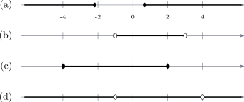
Note 4.63. The shape of the answer follows from the direction the parabola opens. Upward-opening and \(\geq 0\) gives two outer pieces; upward-opening and \(\leq 0\) gives one interval between the roots. Sketching the parabola takes a moment and removes all doubt.
Problem 4.18. [Tutorial Sheet 4] Sketch each quadratic, and state the set of values of \(x\) for which \(f(x)>0\) and for which \(f(x)\leq 0\). (a) \(f(x)=2x^2+3x-3\), (b) \(f(x)=-x^2-4x+1\), (c) \(f(x)=2x^2-4x+5\), (d) \(f(x)=-2x^2-3x+2\).
Show solution
Solution. (a). \(\Delta =9+24=33>0\), roots \(\frac {-3\pm \sqrt {33}}{4}\approx -2.19\) and \(0.69\); opens upwards; \(y\)-intercept \(-3\). \[f(x)>0:\quad x<\tfrac {-3-\sqrt {33}}{4}\ \text { or }\ x>\tfrac {-3+\sqrt {33}}{4},\] \[f(x)\leq 0:\quad \tfrac {-3-\sqrt {33}}{4}\leq x\leq \tfrac {-3+\sqrt {33}}{4}.\]
(b). \(\Delta =16+4=20>0\), roots \(\frac {4\pm \sqrt {20}}{-2}=-2\pm \sqrt {5}\approx -4.24\) and \(0.24\); opens downwards; \(y\)-intercept \(1\). A downward parabola is positive between its roots: \[f(x)>0:\quad -2-\sqrt {5}<x<-2+\sqrt {5},\] \[f(x)\leq 0:\quad x\leq -2-\sqrt {5}\ \text { or }\ x\geq -2+\sqrt {5}.\]
(c). \(\Delta =16-40=-24<0\), so there are no real roots; opens upwards; \(y\)-intercept \(5\). The whole curve sits above the axis: \[f(x)>0:\quad \text {all } x\in \mathbb {R},\qquad f(x)\leq 0:\quad \text {no values; the empty set}.\]
(d). \(\Delta =9+16=25\), a perfect square, so the roots are rational: \[-2x^2-3x+2=-(2x^2+3x-2)=-(2x-1)(x+2),\] giving \(x=\frac {1}{2}\) and \(x=-2\); opens downwards; \(y\)-intercept \(2\): \[f(x)>0:\quad -2<x<\tfrac {1}{2},\qquad f(x)\leq 0:\quad x\leq -2\ \text { or }\ x\geq \tfrac {1}{2}.\]
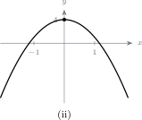
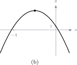
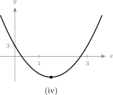
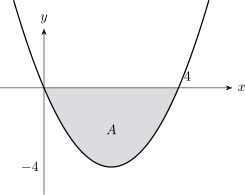
Note 4.64. Part (c) is the one worth pausing on. A negative discriminant does not mean the question has no answer — it means the parabola never crosses the axis, so one of the two sets is everything and the other is empty. Checking the sign of \(f\) at a single convenient point, here \(f(0)=5>0\), settles which is which.
Problem 4.19. [Tutorial Sheet 4] Solve each cubic inequality, illustrating the solution set on a number line. (a) \(4x^3-x<6-9x^2\), (b) \((x+4)(x-2)(x-7)>0\), (c) \(x^3-x^2-9x+9\leq 0\), (d) \(4x^3-8x^2-x+2\neq 0\).
Show solution
Solution. The method is the same as for quadratics: get zero on one side, factorise, and use a sign table across the intervals cut out by the roots.
(a). Rearranging: \[4x^3+9x^2-x-6<0.\] Testing candidates dividing \(6\): \(f(-1)=-4+9+1-6=0\), so \(x+1\) is a factor. Dividing, \[4x^3+9x^2-x-6=(x+1)\left (4x^2+5x-6\right )=(x+1)(4x-3)(x+2),\] with roots \(-2\), \(-1\) and \(\frac {3}{4}\).
| \(x<-2\) | \(-2<x<-1\) | \(-1<x<\frac {3}{4}\) | \(x>\frac {3}{4}\) | |
| \(x+2\) | \(-\) | \(+\) | \(+\) | \(+\) |
| \(x+1\) | \(-\) | \(-\) | \(+\) | \(+\) |
| \(4x-3\) | \(-\) | \(-\) | \(-\) | \(+\) |
| product | \(-\) | \(+\) | \(-\) | \(+\) |
\[\therefore \quad x<-2\quad \text {or}\quad -1<x<\tfrac {3}{4}.\]
(b). Already factorised, roots \(-4\), \(2\), \(7\). With three simple roots the sign alternates, and the leading coefficient is positive so the rightmost interval is positive: \[-,\ +,\ -,\ +\quad \text {across}\quad x<-4,\ -4<x<2,\ 2<x<7,\ x>7.\] \[\therefore \quad -4<x<2\quad \text {or}\quad x>7.\]
(c). Group: \[x^3-x^2-9x+9=x^2(x-1)-9(x-1)=\left (x^2-9\right )(x-1)=(x-3)(x+3)(x-1),\] with roots \(-3\), \(1\), \(3\). Signs alternate, positive on the right: \[-,\ +,\ -,\ +\quad \text {across}\quad x<-3,\ -3<x<1,\ 1<x<3,\ x>3.\] \[\therefore \quad x\leq -3\quad \text {or}\quad 1\leq x\leq 3,\] with the endpoints included since the inequality is \(\leq \).
(d). As in Sheet 3, this asks only where the expression is non-zero. Grouping, \[4x^3-8x^2-x+2=4x^2(x-2)-(x-2)=\left (4x^2-1\right )(x-2)=(2x-1)(2x+1)(x-2),\] with zeros at \(-\frac {1}{2}\), \(\frac {1}{2}\) and \(2\): \[\therefore \quad x\in \mathbb {R}-\left \{-\tfrac {1}{2},\ \tfrac {1}{2},\ 2\right \}.\]
Note 4.65. Once a cubic is factorised into three distinct linear factors, the sign simply alternates between consecutive roots — there is no need to build the whole table. Start from the far right, where the sign is that of the leading coefficient, and flip at each root moving left. A repeated factor is the exception: the sign does not change there.
Problem 4.20. [Tutorial Sheet 4] Sketch each function, and state the values of \(x\) for which \(f(x)>0\) and \(f(x)\leq 0\). (a) \(f(x)=4x^3+9x^2-x-6\), (b) \(f(x)=x^3-5x^2-22x+56\), (c) \(f(x)=x^3-5x^2+3x+9\), (d) \(f(x)=x^4+4x^3-12x^2\).
Show solution
Solution. (a). Factorised in the previous question as \((x+2)(x+1)(4x-3)\); roots \(-2\), \(-1\), \(\frac {3}{4}\); \(y\)-intercept \(-6\): \[f(x)>0:\quad -2<x<-1\ \text { or }\ x>\tfrac {3}{4},\] \[f(x)\leq 0:\quad x\leq -2\ \text { or }\ -1\leq x\leq \tfrac {3}{4}.\]
(b). Testing candidates: \(f(2)=8-20-44+56=0\), so \(x-2\) is a factor. Dividing, \[x^3-5x^2-22x+56=(x-2)\left (x^2-3x-28\right )=(x-2)(x-7)(x+4),\] roots \(-4\), \(2\), \(7\); \(y\)-intercept \(56\): \[f(x)>0:\quad -4<x<2\ \text { or }\ x>7,\] \[f(x)\leq 0:\quad x\leq -4\ \text { or }\ 2\leq x\leq 7.\]
(c). Testing: \(f(3)=27-45+9+9=0\), so \(x-3\) is a factor. Dividing, \[x^3-5x^2+3x+9=(x-3)\left (x^2-2x-3\right )=(x-3)(x-3)(x+1)=(x-3)^2(x+1),\] a repeated root at \(x=3\) and a simple root at \(x=-1\); \(y\)-intercept \(9\).
Because \((x-3)^2\) is never negative, the sign of \(f\) is the sign of \(x+1\) everywhere except at \(x=3\), where \(f=0\): \[f(x)>0:\quad x>-1 \text { but } x\neq 3,\] \[f(x)\leq 0:\quad x\leq -1\ \text { or }\ x=3.\]
(d). Take out the common factor first: \[x^4+4x^3-12x^2=x^2\left (x^2+4x-12\right )=x^2(x+6)(x-2),\] a repeated root at \(x=0\) and simple roots at \(-6\) and \(2\); \(y\)-intercept \(0\).
Again \(x^2\geq 0\), so away from \(x=0\) the sign is that of \((x+6)(x-2)\), which is positive outside \([-6,2]\): \[f(x)>0:\quad x<-6\ \text { or }\ x>2,\] \[f(x)\leq 0:\quad -6\leq x\leq 2.\]
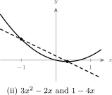
Note 4.66. Parts (c) and (d) both have a repeated root, and that is what makes them different from (a) and (b). At a repeated root the curve touches the axis and turns back, so the sign does not alternate through it. Answering (c) with “positive between \(-1\) and \(3\), negative after \(3\)” is the error the repeated factor is there to catch.
Note 4.67. The point \(x=3\) has to be written out of the answer to \(f(x)>0\) and into the answer to \(f(x)\leq 0\), because \(f(3)=0\) exactly. Isolated points like this are easy to lose.
Problem 4.21. [Tutorial Sheet 4]
- Sketch (i) \(y=|2x+3|\), (ii) \(y=\left |x^2-9\right |\), (iii) \(y=\left |x^3+1\right |\), (iv) \(y=\left |x^3+x^2-x-1\right |\).
- Solve (i) \(\left |2x-\frac {3}{2}\right |=3\), (ii) \(|5x-2|=|2x|\).
Show solution
Solution. (a). The graph of \(y=|f(x)|\) is the graph of \(y=f(x)\) with every part below the \(x\)-axis reflected upwards. So sketch \(f\) first, then flip.
(i). \(y=2x+3\) is a line crossing the axis at \(x=-\frac {3}{2}\). Reflecting the part to the left gives a V with its vertex at \(\left (-\frac {3}{2},0\right )\) and \(y\)-intercept \(3\).
(ii). \(y=x^2-9\) is a parabola with roots \(\pm 3\) and minimum \((0,-9)\). The whole arc between \(-3\) and \(3\) is below the axis, so it flips up into a hump peaking at \((0,9)\).
(iii). \(y=x^3+1\) crosses at \(x=-1\). Everything to the left of \(-1\) is negative and flips up, giving a curve that comes down to zero at \(x=-1\) and rises again.
(iv). \(x^3+x^2-x-1=(x-1)(x+1)^2\), from Sheet 3. It is negative for \(x<1\) apart from touching zero at \(x=-1\), and positive for \(x>1\). After reflection the curve touches zero at \(x=-1\) and again at \(x=1\), staying non-negative throughout.
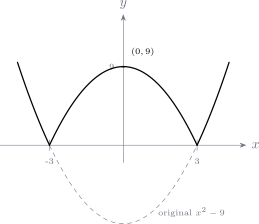
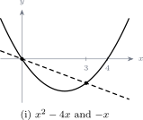

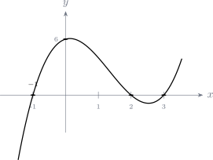
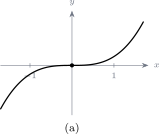
(b)(i). \(|A|=3\) means \(A=3\) or \(A=-3\): \[2x-\tfrac {3}{2}=3\quad \implies \quad 2x=\tfrac {9}{2}\quad \implies \quad x=\tfrac {9}{4},\] \[2x-\tfrac {3}{2}=-3\quad \implies \quad 2x=-\tfrac {3}{2}\quad \implies \quad x=-\tfrac {3}{4}.\] \[\therefore \quad x=\tfrac {9}{4}\ \text { or }\ x=-\tfrac {3}{4}.\]
(ii). \(|A|=|B|\) means \(A=B\) or \(A=-B\): \[5x-2=2x\quad \implies \quad 3x=2\quad \implies \quad x=\tfrac {2}{3},\] \[5x-2=-2x\quad \implies \quad 7x=2\quad \implies \quad x=\tfrac {2}{7}.\] \[\therefore \quad x=\tfrac {2}{3}\ \text { or }\ x=\tfrac {2}{7}.\]
Check. At \(x=\frac {2}{3}\): \(\left |\frac {10}{3}-2\right |=\frac {4}{3}\) and \(\left |\frac {4}{3}\right |=\frac {4}{3}\). \(\checkmark \) At \(x=\frac {2}{7}\): \(\left |\frac {10}{7}-2\right |=\frac {4}{7}\) and \(\left |\frac {4}{7}\right |=\frac {4}{7}\). \(\checkmark \)
Note 4.68. When both sides carry a modulus, as in (ii), no check on signs is needed — both cases always give genuine solutions. When only one side does, as in the next question, the other side must be non-negative, and any root failing that has to be discarded.
Problem 4.22. [Tutorial Sheet 4] For each pair, sketch the graphs and solve \(f(x)=g(x)\).
- \(f(x)=\left |x^2-2x\right |\), \(g(x)=\frac {1}{4}-2x\)
- \(f(x)=-2x\), \(g(x)=\left |\frac {1}{2}x-2\right |\)
- \(f(x)=|5x-4|\), \(g(x)=24+2x-x^2\)
Show solution
Solution. Each has a modulus on one side only. Split into the two cases, solve each, and then test every root against the case it came from and against the requirement that the non-modulus side be non-negative.
(i). \(\left |x^2-2x\right |=\frac {1}{4}-2x\). Note \(x^2-2x=x(x-2)\), which is \(\geq 0\) for \(x\leq 0\) or \(x\geq 2\), and negative for \(0<x<2\).
Case 1: \(x\leq 0\) or \(x\geq 2\). The modulus comes off unchanged: \[x^2-2x=\tfrac {1}{4}-2x\quad \implies \quad x^2=\tfrac {1}{4}\quad \implies \quad x=\pm \tfrac {1}{2}.\] Of these, \(x=-\frac {1}{2}\) lies in the case and \(x=\frac {1}{2}\) does not. Keep \(x=-\frac {1}{2}\).
Case 2: \(0<x<2\). The modulus comes off with a sign change: \[-\left (x^2-2x\right )=\tfrac {1}{4}-2x\quad \implies \quad -x^2+4x-\tfrac {1}{4}=0 \quad \implies \quad x^2-4x+\tfrac {1}{4}=0,\] \[x=\frac {4\pm \sqrt {16-1}}{2}=\frac {4\pm \sqrt {15}}{2}=2\pm \frac {\sqrt {15}}{2} \approx 3.94 \text { and } 0.064.\] Only \(x=2-\frac {\sqrt {15}}{2}\approx 0.064\) lies in \((0,2)\).
Finally check the right-hand side is non-negative at both surviving roots: \(\frac {1}{4}-2\left (-\frac {1}{2}\right )=\frac {5}{4}>0\) and \(\frac {1}{4}-2(0.064)\approx 0.12>0\). Both stand. \[\therefore \quad x=-\tfrac {1}{2}\quad \text {or}\quad x=2-\tfrac {\sqrt {15}}{2} \approx 0.064.\]
(ii). \(-2x=\left |\frac {1}{2}x-2\right |\). A modulus is never negative, so \(-2x\geq 0\), giving \(x\leq 0\) before anything else is done.
Case 1: \(\frac {1}{2}x-2\geq 0\), that is \(x\geq 4\). This contradicts \(x\leq 0\), so this case is empty. (Solving it anyway gives \(x=\frac {4}{5}\), which fails both conditions.)
Case 2: \(x<4\). \[-2x=-\left (\tfrac {1}{2}x-2\right )=2-\tfrac {1}{2}x\quad \implies \quad -2x+\tfrac {1}{2}x=2\quad \implies \quad -\tfrac {3}{2}x=2\quad \implies \quad x=-\tfrac {4}{3}.\] This satisfies \(x<4\) and \(x\leq 0\). \[\therefore \quad x=-\tfrac {4}{3}.\]
Check. \(-2\left (-\frac {4}{3}\right )=\frac {8}{3}\), and \(\left |\frac {1}{2}\left (-\frac {4}{3}\right )-2\right |=\left |-\frac {2}{3}-2\right | =\frac {8}{3}\). \(\checkmark \)
(iii). \(|5x-4|=24+2x-x^2\). The modulus is zero at \(x=\frac {4}{5}\).
Case 1: \(x\geq \frac {4}{5}\). \[5x-4=24+2x-x^2\quad \implies \quad x^2+3x-28=0\quad \implies \quad (x+7)(x-4)=0,\] giving \(x=-7\) or \(x=4\). Only \(x=4\) lies in the case.
Case 2: \(x<\frac {4}{5}\). \[-(5x-4)=24+2x-x^2\quad \implies \quad 4-5x=24+2x-x^2\quad \implies \quad x^2-7x-20=0,\] \[x=\frac {7\pm \sqrt {49+80}}{2}=\frac {7\pm \sqrt {129}}{2}\approx 9.18 \text { and } -2.18.\] Only \(x=\frac {7-\sqrt {129}}{2}\approx -2.18\) lies in the case.
Both surviving roots need \(24+2x-x^2\geq 0\): at \(x=4\) it is \(24+8-16=16>0\), and at \(x\approx -2.18\) it is \(\approx 14.9>0\). \[\therefore \quad x=4\quad \text {or}\quad x=\frac {7-\sqrt {129}}{2}\approx -2.18.\]
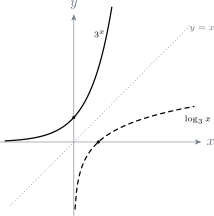
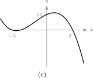
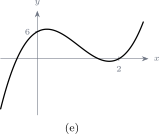
Note 4.69. Every part here produced a candidate that had to be thrown away: \(\frac {1}{2}\) in (i), \(\frac {4}{5}\) in (ii), and \(-7\) and \(9.18\) in (iii). Splitting into cases generates roots that solve the equation without the modulus but not with it, so testing each root against its own case is not optional — it is where half the marks are.
Note 4.70. The sketch is worth doing first even when the algebra is straightforward, because it tells you how many intersections to expect. If the algebra produces three surviving roots and the picture shows two crossings, something has gone wrong.
Note 4.71. Tutorial Sheet 5 (an earlier version of this material, dated April 2023) repeats much of Sheets 3 and 4 word for word. Its question 3 is Sheet 3’s question 6(c), its question 4(a)–(e) is Sheet 3’s question 7, its question 6 is Sheet 3’s question 8, its question 7(b)–(e) is Sheet 3’s question 9(c)–(f), and its question 8 is Sheet 4’s question 1(a) — including the same misprint in \(x^4-6x^3-11x^2+24x-28\). All of those are solved above and are not repeated here.
What follows is the genuinely new material from Sheet 5: its questions 1 and 2, which use different divisors; question 4(f); question 5; the two new sketches in question 7; and question 9, on partial fractions, which appears nowhere else.
Problem 4.23. [Tutorial Sheet 5] Use long division to divide each polynomial by the given divisor.
- \(f(x)=-x^2+3x+5\) by \(x^2+1\)
- \(f(x)=5x^3-19x^2+16x-4\) by \(x-5\)
- \(f(x)=2x^3+6x^2-x+3\) by \(2x^2-2\)
- \(f(x)=-2x^4+3x^2+1\) by \(x^2-2x+3\)
Show solution
Solution. (a). The dividend and divisor have the same degree, so the quotient is a constant: \[-x^2\div x^2=-1;\quad -1\left (x^2+1\right )=-x^2-1;\quad \text {subtract: } 3x+5-(-1)=3x+6.\] The remainder \(3x+6\) has degree \(1\), lower than the divisor’s \(2\), so we stop. \[\therefore \quad -x^2+3x+5=(-1)\left (x^2+1\right )+(3x+6).\]
(b). Note the divisor here is \(x-5\), not the \(x-2\) of Sheet 3: \[5x^3\div x=5x^2;\quad 5x^2(x-5)=5x^3-25x^2;\quad \text {subtract: } 6x^2+16x-4.\] \[6x^2\div x=6x;\quad 6x(x-5)=6x^2-30x;\quad \text {subtract: } 46x-4.\] \[46x\div x=46;\quad 46(x-5)=46x-230;\quad \text {subtract: } 226.\] \[\therefore \quad 5x^3-19x^2+16x-4=\left (5x^2+6x+46\right )(x-5)+226.\]
(c). Writing the divisor as \(2x^2+0x-2\): \[2x^3\div 2x^2=x;\quad x\left (2x^2-2\right )=2x^3-2x;\quad \text {subtract: } 6x^2+x+3.\] \[6x^2\div 2x^2=3;\quad 3\left (2x^2-2\right )=6x^2-6;\quad \text {subtract: } x+9.\] \[\therefore \quad 2x^3+6x^2-x+3=(x+3)\left (2x^2-2\right )+(x+9).\]
(d). Write the dividend in full as \(-2x^4+0x^3+3x^2+0x+1\): \[-2x^4\div x^2=-2x^2;\quad -2x^2\left (x^2-2x+3\right )=-2x^4+4x^3-6x^2;\] \[\text {subtract: } -4x^3+9x^2+0x+1.\] \[-4x^3\div x^2=-4x;\quad -4x\left (x^2-2x+3\right )=-4x^3+8x^2-12x;\quad \text {subtract: } x^2+12x+1.\] \[x^2\div x^2=1;\quad 1\left (x^2-2x+3\right )=x^2-2x+3;\quad \text {subtract: } 14x-2.\] \[\therefore \quad -2x^4+3x^2+1=\left (-2x^2-4x+1\right )\left (x^2-2x+3\right )+(14x-2).\]
Note 4.72. Part (a) is worth noticing: when the dividend and divisor have the same degree the quotient is a number, and when the dividend has the lower degree the quotient is zero and the whole dividend is the remainder. Neither case is an error.
Problem 4.24. [Tutorial Sheet 5] Use synthetic division to divide each polynomial by the given divisor, writing the result as \(p(x)=q(x)(x-a)+r\).
- \(p(x)=x^3-7x^2-4x+28\) by \(x-3\)
- \(p(x)=5x^3-6x^2-28x-2\) by \(5x+10\)
- \(p(x)=x^3-10x^2-31x-30\) by \(x-11\)
- \(p(x)=6x^3+x^2-21x-10\) by \(2x+1\)
Show solution
Solution. (a). Divisor \(x-3\), so \(a=3\):
| \(a=3\) | 1 | \(-7\) | \(-4\) | 28 |
| 3 | \(-12\) | \(-48\) | ||
| 1 | \(-4\) | \(-16\) | \(\mathbf {-20}\) | |
\[\therefore \quad x^3-7x^2-4x+28=\left (x^2-4x-16\right )(x-3)-20.\] Compare Sheet 3, where the same polynomial divided by \(x+2\) gave remainder \(0\). Here \(x-3\) is not a factor.
(b). The divisor is \(5x+10=5(x+2)\), so first divide by \(x+2\), that is \(a=-2\):
| \(a=-2\) | 5 | \(-6\) | \(-28\) | \(-2\) |
| \(-10\) | 32 | \(-8\) | ||
| 5 | \(-16\) | 4 | \(\mathbf {-10}\) | |
\[5x^3-6x^2-28x-2=\left (5x^2-16x+4\right )(x+2)-10.\] Now convert to the required divisor. Since \(x+2=\frac {1}{5}(5x+10)\), move the \(\frac {1}{5}\) into the quotient: \[=\left (x^2-\tfrac {16}{5}x+\tfrac {4}{5}\right )(5x+10)-10.\]
(c). Divisor \(x-11\), so \(a=11\):
| \(a=11\) | 1 | \(-10\) | \(-31\) | \(-30\) |
| 11 | 11 | \(-220\) | ||
| 1 | 1 | \(-20\) | \(\mathbf {-250}\) | |
\[\therefore \quad x^3-10x^2-31x-30=\left (x^2+x-20\right )(x-11)-250.\]
(d). This is the same as Sheet 3, question 6(b)(iv): \[6x^3+x^2-21x-10=\left (3x^2-x-10\right )(2x+1)+0.\]
Note 4.73. Parts (b) and (d) both have a divisor whose leading coefficient is not \(1\), and both need the same adjustment: divide by the corresponding \(x-a\), then move the constant factor from the divisor into the quotient. The remainder is unaffected — it is \(p(a)\) either way.
Note 4.74. Each remainder here can be checked against the remainder theorem. In (c), \(p(11)=1331-1210-341-30=-250\). \(\checkmark \)
Show solution
Solution. This is a difference of two cubes, \(a^3-b^3=(a-b)\left (a^2+ab+b^2\right )\) with \(a=x\) and \(b=2\): \[x^3-8=(x-2)\left (x^2+2x+4\right )=0.\] The first factor gives \(x=2\). For the second, \[\Delta =4-16=-12<0,\] so it has no real roots. \[\therefore \quad x=2 \text { is the only real solution}.\]
Note 4.75. Every cubic with real coefficients has at least one real root, and here it is the obvious one. The other two roots are complex, \(x=-1\pm i\sqrt {3}\), and if the question had asked for solutions in \(\mathbb {C}\) they would need to be given as well.
Problem 4.26. [Tutorial Sheet 5] Let \(f(x)=4x^3-7x-3\).
- Find the remainder when \(f(x)\) is divided by \(x-2\).
- Show that \(2x+1\) is a factor of \(f(x)\).
- Hence, or otherwise, solve \(4x^3-7x-3=0\).
Show solution
Solution. (a). By the remainder theorem the remainder is \(f(2)\): \[f(2)=4(8)-7(2)-3=32-14-3=15.\]
(b). The divisor \(2x+1\) vanishes at \(x=-\frac {1}{2}\), so by the factor theorem it is a factor precisely when \(f\left (-\frac {1}{2}\right )=0\): \[f\left (-\tfrac {1}{2}\right )=4\left (-\tfrac {1}{8}\right )-7\left (-\tfrac {1}{2}\right )-3 =-\tfrac {1}{2}+\tfrac {7}{2}-3=3-3=0.\] \[\therefore \quad 2x+1 \text { is a factor}.\]
(c). Dividing \(f(x)\) by \(2x+1\). Writing the dividend in full as \(4x^3+0x^2-7x-3\) and using synthetic division with \(a=-\frac {1}{2}\):
| \(a=-\frac {1}{2}\) | 4 | 0 | \(-7\) | \(-3\) |
| \(-2\) | 1 | 3 | ||
| 4 | \(-2\) | \(-6\) | 0 | |
\[4x^3-7x-3=\left (4x^2-2x-6\right )\left (x+\tfrac {1}{2}\right ) =\left (2x^2-x-3\right )(2x+1),\] halving the quotient because \(x+\frac {1}{2}=\frac {1}{2}(2x+1)\). Factorising the quadratic: \[2x^2-x-3=(2x-3)(x+1).\] \[\therefore \quad 4x^3-7x-3=(2x+1)(2x-3)(x+1)=0,\] \[x=-\tfrac {1}{2},\qquad x=\tfrac {3}{2},\qquad x=-1.\]
Note 4.76. Parts (a) and (b) are the same theorem used twice: substitute the value that makes the divisor zero. The only difference is that in (b) the answer happens to be zero, which is what “factor” means. Part (a) is not needed for part (c) — it is there to make the contrast.
Problem 4.27. [Tutorial Sheet 5] Sketch, indicating the \(x\)- and \(y\)-intercepts: (a) \(f(x)=x^3-13x+12\), (f) \(f(x)=-x^3+10\).
Show solution
Solution. (a). \(y\)-intercept \(f(0)=12\). Testing candidates dividing \(12\): \[f(1)=1-13+12=0,\] so \(x-1\) is a factor. Dividing, \[x^3-13x+12=(x-1)\left (x^2+x-12\right )=(x-1)(x+4)(x-3).\] \[\therefore \quad x\text {-intercepts } -4,\ 1,\ 3;\qquad y\text {-intercept } 12.\] The leading coefficient is positive, so the curve falls to the left and rises to the right, crossing the axis at each of the three simple roots.
(f). \(y\)-intercept \(f(0)=10\). Setting \(f(x)=0\): \[x^3=10\quad \implies \quad x=\sqrt [3]{10}\approx 2.15,\] the only real root. The leading coefficient is \(-1\), so the curve falls to the right — the mirror image, in shape, of \(y=x^3\).
Note 4.77. In (a) the constant term \(12\) is what limits the search for roots: any rational root must divide it, so only \(\pm 1,\pm 2,\pm 3,\pm 4,\pm 6,\pm 12\) need testing, and \(x=1\) works first time. Testing values at random is much slower.
Problem 4.28. [Tutorial Sheet 5] Find the partial-fraction decomposition of each rational function. (a) \(\frac {1}{(x+5)(x+4)}\), (b) \(\frac {x+7}{x^2+3x+2}\), (c) \(\frac {2x^2-9x-35}{x^3+2x^2-5x-6}\), (d) \(\frac {x^2-1}{x\left (x^2+1\right )}\), (e) \(\frac {x-3}{x^3+3x}\), (f) \(\frac {2x}{(x+1)^2\left (x^2+1\right )}\), (g) \(\frac {x^2+1}{x^2-1}\), (h) \(\frac {4x^3+10x+4}{x(2x+1)}\), (i) \(\frac {2x^4+3x^2+1}{x^2+3x+2}\), (j) \(\frac {x^2+2}{(x+2)^2(x+3)}\), (k) \(\frac {4x}{x^3+4x^2+5x+2}\).
Show solution
Solution.
Note 4.78. Two checks before starting, every time. First, is the degree of the numerator less than that of the denominator? If not, divide first — that is (g), (h) and (i) below. Second, factorise the denominator completely, since the form of the decomposition is read off those factors.
(a). \(\frac {1}{(x+5)(x+4)}=\frac {A}{x+5}+\frac {B}{x+4}\). Multiplying up, \[1=A(x+4)+B(x+5).\] \[x=-4:\ 1=B\quad \implies \quad B=1;\qquad x=-5:\ 1=-A\quad \implies \quad A=-1.\] \[\therefore \quad \frac {1}{x+4}-\frac {1}{x+5}.\]
(b). \(x^2+3x+2=(x+1)(x+2)\), so \[x+7=A(x+2)+B(x+1).\] \[x=-1:\ 6=A;\qquad x=-2:\ 5=-B\quad \implies \quad B=-5.\] \[\therefore \quad \frac {6}{x+1}-\frac {5}{x+2}.\]
(c). Factorise the cubic. Testing \(x=2\): \(8+8-10-6=0\), so \(x-2\) is a factor, and dividing gives \[x^3+2x^2-5x-6=(x-2)\left (x^2+4x+3\right )=(x-2)(x+1)(x+3).\] Then \(2x^2-9x-35=A(x+1)(x+3)+B(x-2)(x+3)+C(x-2)(x+1)\). \[x=2:\ 8-18-35=-45=A(3)(5)=15A\quad \implies \quad A=-3,\] \[x=-1:\ 2+9-35=-24=B(-3)(2)=-6B\quad \implies \quad B=4,\] \[x=-3:\ 18+27-35=10=C(-5)(-2)=10C\quad \implies \quad C=1.\] \[\therefore \quad -\frac {3}{x-2}+\frac {4}{x+1}+\frac {1}{x+3}.\]
(d). The denominator has an irreducible quadratic factor: \[\frac {x^2-1}{x\left (x^2+1\right )}=\frac {A}{x}+\frac {Bx+C}{x^2+1},\] \[x^2-1=A\left (x^2+1\right )+(Bx+C)x.\] \[x=0:\ -1=A.\] Comparing coefficients of \(x^2\): \(1=A+B\), so \(B=2\). Comparing coefficients of \(x\): \(0=C\). \[\therefore \quad -\frac {1}{x}+\frac {2x}{x^2+1}.\]
(e). \(x^3+3x=x\left (x^2+3\right )\), so \[x-3=A\left (x^2+3\right )+(Bx+C)x.\] \[x=0:\ -3=3A\quad \implies \quad A=-1.\] Coefficients of \(x^2\): \(0=A+B\), so \(B=1\). Coefficients of \(x\): \(1=C\). \[\therefore \quad -\frac {1}{x}+\frac {x+1}{x^2+3}.\]
(f). A repeated linear factor and an irreducible quadratic: \[\frac {2x}{(x+1)^2\left (x^2+1\right )}=\frac {A}{x+1}+\frac {B}{(x+1)^2} +\frac {Cx+D}{x^2+1},\] \[2x=A(x+1)\left (x^2+1\right )+B\left (x^2+1\right )+(Cx+D)(x+1)^2.\] \[x=-1:\ -2=B(2)\quad \implies \quad B=-1.\] Comparing coefficients of \(x^3\): \(0=A+C\). Of \(x^2\): \(0=A+B+2C+D\). Of the constant term: \(0=A+B+D\). Subtracting the last from the second gives \(0=2C\), so \(C=0\) and hence \(A=0\), and then \(D=-B=1\). \[\therefore \quad -\frac {1}{(x+1)^2}+\frac {1}{x^2+1}.\] Two of the four constants are zero, which is perfectly normal; the terms simply drop out.
(g). The numerator and denominator have the same degree, so divide first: \[\frac {x^2+1}{x^2-1}=1+\frac {2}{x^2-1}=1+\frac {2}{(x-1)(x+1)}.\] Then \(2=A(x+1)+B(x-1)\) gives \(A=1\) at \(x=1\) and \(B=-1\) at \(x=-1\): \[\therefore \quad 1+\frac {1}{x-1}-\frac {1}{x+1}.\]
(h). Degree \(3\) over degree \(2\), so divide. With \(x(2x+1)=2x^2+x\): \[\frac {4x^3+10x+4}{2x^2+x}=2x-1+\frac {11x+4}{2x^2+x}.\] Now split the remainder over \(x(2x+1)\): \[11x+4=A(2x+1)+Bx.\] \[x=0:\ 4=A;\qquad x=-\tfrac {1}{2}:\ -\tfrac {11}{2}+4=-\tfrac {3}{2}=-\tfrac {1}{2}B \quad \implies \quad B=3.\] \[\therefore \quad 2x-1+\frac {4}{x}+\frac {3}{2x+1}.\]
(i). Degree \(4\) over degree \(2\), so the quotient has degree \(2\). Dividing \(2x^4+0x^3+3x^2+0x+1\) by \(x^2+3x+2\) gives \[\frac {2x^4+3x^2+1}{x^2+3x+2}=2x^2-6x+17+\frac {-39x-33}{(x+1)(x+2)}.\] Then \(-39x-33=A(x+2)+B(x+1)\): \[x=-1:\ 39-33=6=A;\qquad x=-2:\ 78-33=45=-B\quad \implies \quad B=-45.\] \[\therefore \quad 2x^2-6x+17+\frac {6}{x+1}-\frac {45}{x+2}.\]
(j). A repeated linear factor: \[\frac {x^2+2}{(x+2)^2(x+3)}=\frac {A}{x+2}+\frac {B}{(x+2)^2}+\frac {C}{x+3},\] \[x^2+2=A(x+2)(x+3)+B(x+3)+C(x+2)^2.\] \[x=-2:\ 6=B(1)\quad \implies \quad B=6;\qquad x=-3:\ 11=C(1)\quad \implies \quad C=11.\] Comparing coefficients of \(x^2\): \(1=A+C\), so \(A=1-11=-10\). \[\therefore \quad -\frac {10}{x+2}+\frac {6}{(x+2)^2}+\frac {11}{x+3}.\]
(k). Factorise the denominator. Testing \(x=-1\): \(-1+4-5+2=0\), so \(x+1\) is a factor, and dividing gives \[x^3+4x^2+5x+2=(x+1)\left (x^2+3x+2\right )=(x+1)(x+1)(x+2)=(x+1)^2(x+2),\] another repeated factor. So \[4x=A(x+1)(x+2)+B(x+2)+C(x+1)^2.\] \[x=-1:\ -4=B(1)\quad \implies \quad B=-4;\qquad x=-2:\ -8=C(1)\quad \implies \quad C=-8.\] Coefficients of \(x^2\): \(0=A+C\), so \(A=8\). \[\therefore \quad \frac {8}{x+1}-\frac {4}{(x+1)^2}-\frac {8}{x+2}.\]
Note 4.79. Substituting the values that make each factor vanish is what makes this quick — it kills every term but one. For a repeated factor \((x+1)^2\) that trick delivers only the \(B\) on the squared term, since substituting \(x=-1\) also kills the \(A\) term. The remaining constants have to come from comparing coefficients, as in (f), (j) and (k).
Note 4.80. Every decomposition can be checked in seconds by substituting one convenient value of \(x\) into both the original and the answer. In (k) at \(x=0\) the original is \(0\) and the answer is \(8-4-4=0\). \(\checkmark \) It will not catch every error, but it catches most.